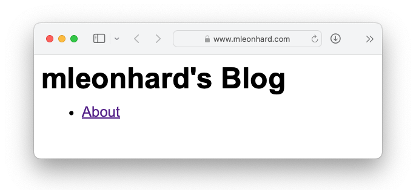

The Browser is Integral to Web App UX
mleonhard, 2024-04-06.
The browser is an integral part of any web app experience.

Webapp makers can provide better user-experience when they
carefully consider web app behavior when the user invokes various browser functions:
- User opens a saved URL (browser bookmark, link in an email or slack, etc.)
- Does the app show the same content that was visible when they saved the URL?
- What happens when a user opens a URL that was saved by another user?
- When the user must click a button to show subordinate content,
like a popup or an expanded view,
will they also have a way to get a link to that content?
- Is the URL format human-readable (
/invoice-1234) or inscrutable
(/40104-17110@8932#191977)?
- Is the URL short or long? Will it get cut into multiple lines when pasted into an email?
- Can one easily tell the URL to someone verbally, or does it contain symbols that are hard to say
(like
^\_`<>|{}) or mixed upper-case and lower-case letters?
- User clicks the browser's Back or Forward buttons
- Will this navigate between breadcrumb items, between "screens"?
- Will it open or close subordinate content?
- Will it undo or re-do changes to input widgets?
- User presses the browser's Refresh button
- Does the app keep the breadcrumbs?
- Does it remember inputted data?
- User is editing some content and then navigates to a different page, clicks Refresh, or closes the tab
- Does the app preserve their work, so they can resume editing it later?
- Does it warn the user about navigating away and let them cancel the operation?
- User is editing some content and clicks Save, but the save operation fails
- Does the app preserve their content and let them try the Save operation again?
- User opens the web app in two browser windows
- Can the user navigate in both windows separately?
- Does each window have its own breadcrumbs?
- What happens when the user changes some content and then tries to change the same content in another
window?
- What happens when two users try to change the same content?
- What happens when a user changes some content but the save operation fails because their Internet
connection is broken.
Later, another user changes the content.
Then later, the first user's Internet connection is restored.
The app in the first user's browser tries the save operation again. What will happen?
Will it overwrite the newer version of the content?
- User middle-clicks on a link or button, intending to open a new tab
- Does the app treat the middle click as a left-click,
preventing the user from opening a new tab?
- Does the app treat the middle click as a left-click,
navigating away from page?
- When a user needs to open a lot of pages, can they use middle-click to open several pages at once?
- User clicks on a PDF or other kind of file that most browsers can display
- Does the file display in the browser, or does the user have to save it to disk and then open it
separately?
- Does the file open in a new tab?
- Can the user middle-click on the file to open it in a new tab?
- Can a user get a URL of a file from another user and view it?
- When we deploy a new version of the app
- Will the app destroy any information the user has entered but not saved?
- Will the app close all open screens and return the user to the homepage?
- When the page content is taller than the browser window
- Does a vertical scroll bar appear?
- Does the scroll bar have enough contrast for the user to see it and its handle?
- Can the user use the mouse to click and drag the scroll bar handle?
- Can the user use the mouse scroll wheel to scroll the page?
Does the scrolling speed match the user's native OS scrolling behavior?
- Can the user drag their finger on the page to scroll it?
- When the page content is wider than the browser window
- Does content flow and wrap and remain visible without horizontal scrolling?
- Does the content extend offscreen and allow horizontal scrolling?
If so, is there an *affordance* (a perceivable action possibility) for scrolling horizontally?
- Does the scroll bar have enough contrast for the user to see it and the handle?
- Can the user use the mouse to click and drag the scroll bar handle?
- Can the user drag their finger horizontally to scroll the content?
- Accessibility, inclusive design
- Can mobile users use the pinch/spread gesture to zoom the page?
- When a desktop user zooms the page, does *all* of the page content resize accordingly?
- When the user configures the browser with a specific font size,
does the app display text with this font size?
- Are all modals scrollable,
so buttons at the bottom are on-screen and clickable even when the font size is large
or the browser is zoomed in?